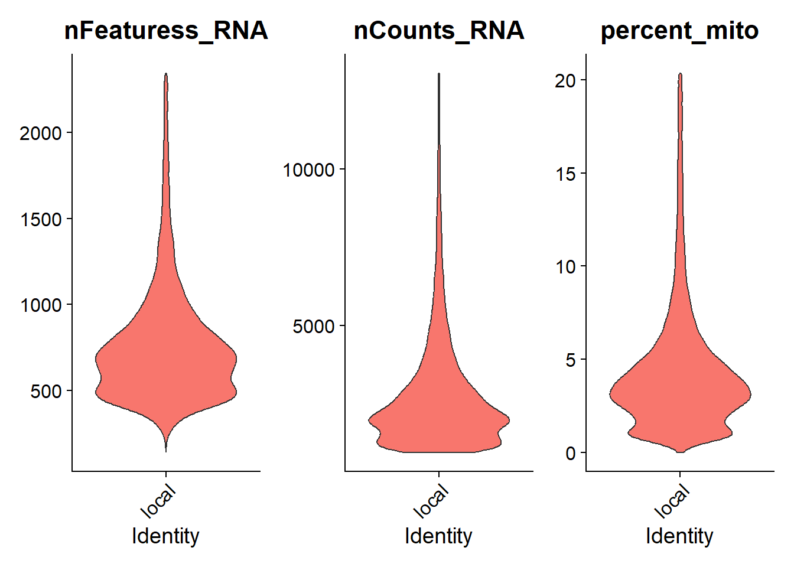
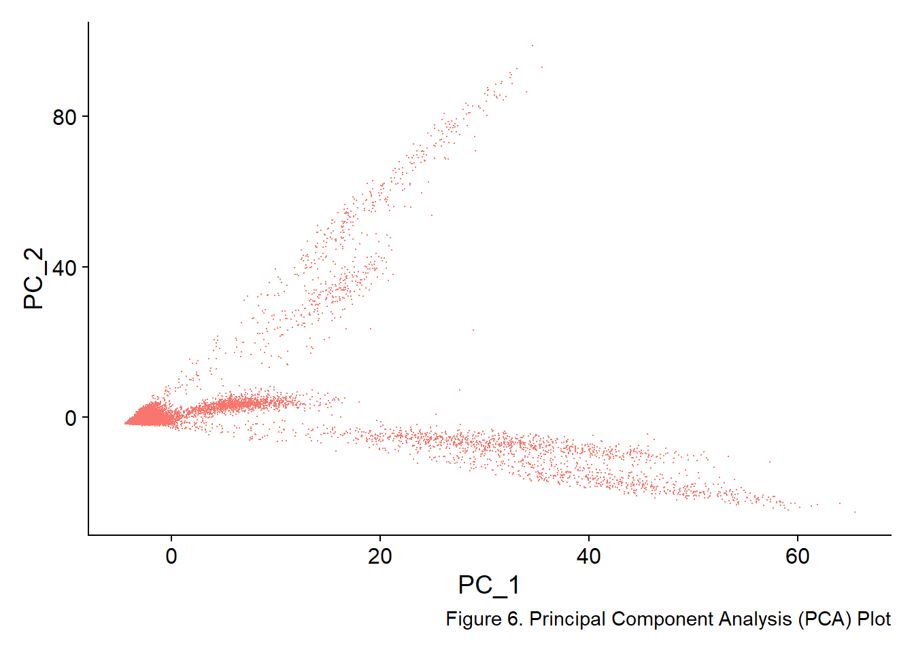
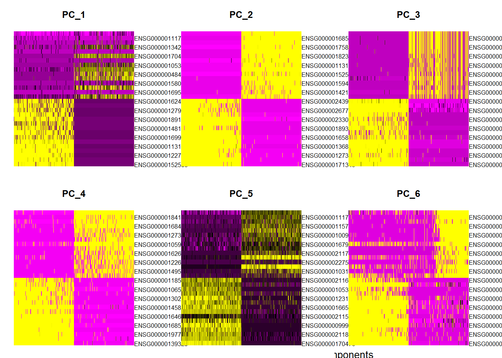
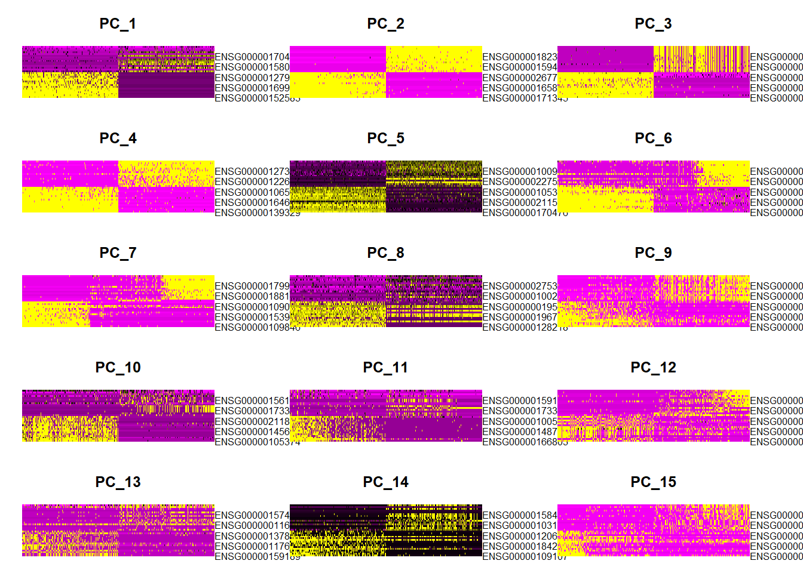
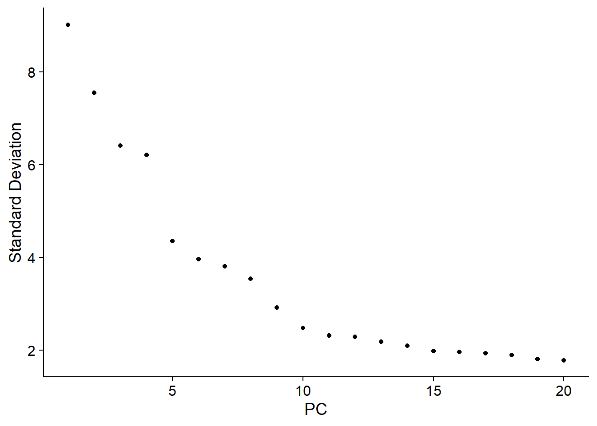
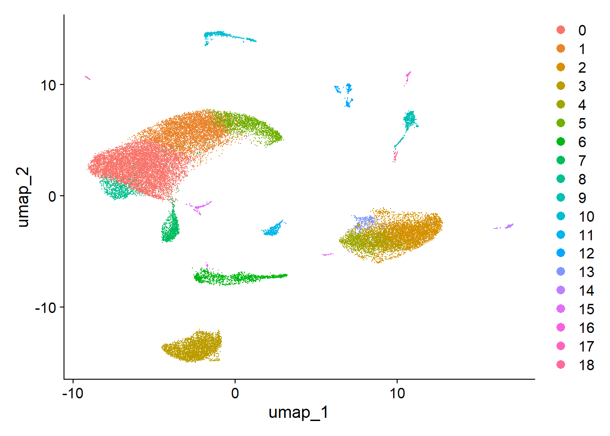

Portfolio FFR
2024-11-20
1 Crohn_dissease
crohns_dissease_seurat <- readRDS(url("https://datasets.cellxgene.cziscience.com/7afb64af-cd3b-44ed-bd2a-3d7bd8a98e13.rds"))# Extract raw counts and metadata to create SingleCellExperiment object
counts <- crohns_dissease_seurat@assays$RNA@counts
metadata <- crohns_dissease_seurat@meta.data
# Plot violin plots for QC metrics
VlnPlot(crohns_dissease_seurat, features = c("nFeaturess_RNA", "nCounts_RNA", "percent_mito"), ncol = 3, pt.size = FALSE)
#setting the limits on exceptable values to select alowing some [10%] mitochondrial dna into the data set
subset_crohns_dissease <- subset(crohns_dissease_seurat, subset = nFeaturess_RNA > 200 & nFeaturess_RNA < 2500 & percent_mito < 10)
VlnPlot(subset_crohns_dissease, features = c("nFeaturess_RNA", "nCounts_RNA", "percent_mito"), ncol = 3, pt.size = FALSE)
plot1 <- FeatureScatter(subset_crohns_dissease, feature1 = "nCounts_RNA", feature2 = "percent_mito")
plot2 <- FeatureScatter(subset_crohns_dissease, feature1 = "nCounts_RNA", feature2 = "nFeaturess_RNA")
plot1 + plot2
# getting rownames into object
ensembl_ids <- rownames(crohns_dissease_seurat@assays$RNA@counts)
# loading in ensemble ids and human genes
ensembl <- useEnsembl(biomart = "genes", dataset = "hsapiens_gene_ensembl")
# using the biomart to extract gene ids from ensemble gen ids
gene_mapping <- getBM(
attributes = c("ensembl_gene_id", "hgnc_symbol"),
filters = "ensembl_gene_id",
values = ensembl_ids,
mart = ensembl
)
# pasting the names and ensamble ids together with setnames and creating a sepperate object for later use
gene_name_map <- setNames(gene_mapping$hgnc_symbol, gene_mapping$ensembl_gene_id)# Find variable features
FVF_crohns_dissease <- FindVariableFeatures(norm_subset_crohns_dissease, selection.method = "vst")
# load variable features into object
variable_features <- VariableFeatures(FVF_crohns_dissease)
# Map variable features to gene names
variable_features_gene_names <- gene_name_map[variable_features]
# Handle NA values (e.g., unmapped IDs)
variable_features_gene_names <- ifelse(
is.na(variable_features_gene_names),
variable_features, # Use Ensembl ID if no gene name
variable_features_gene_names
)
# Extract top 10 variable genes
top10_gene_names <- head(variable_features_gene_names, 10)# Plot variable features
plot3 <- VariableFeaturePlot(FVF_crohns_dissease)
# Label points with gene names
plot4 <- LabelPoints(
plot = plot3,
points = head(variable_features, 10),
labels = top10_gene_names,
repel = TRUE
)## When using repel, set xnudge and ynudge to 0 for optimal results## Warning in scale_x_log10(): log-10 transformation introduced
## infinite values.
## Centering and scaling data matrix## PC_ 1
## Positive: ENSG00000152583, ENSG00000163453, ENSG00000122786, ENSG00000175899, ENSG00000113140, ENSG00000142089, ENSG00000169908, ENSG00000164692, ENSG00000148180, ENSG00000165949
## ENSG00000189171, ENSG00000168542, ENSG00000127920, ENSG00000004799, ENSG00000162407, ENSG00000176907, ENSG00000106538, ENSG00000182326, ENSG00000141753, ENSG00000139329
## ENSG00000100234, ENSG00000118523, ENSG00000250722, ENSG00000011465, ENSG00000134028, ENSG00000211445, ENSG00000106565, ENSG00000000971, ENSG00000101335, ENSG00000067113
## Negative: ENSG00000110848, ENSG00000111796, ENSG00000271503, ENSG00000134285, ENSG00000227507, ENSG00000170476, ENSG00000211751, ENSG00000105369, ENSG00000132465, ENSG00000048462
## ENSG00000099958, ENSG00000158050, ENSG00000211890, ENSG00000169508, ENSG00000211592, ENSG00000166562, ENSG00000211895, ENSG00000153563, ENSG00000180879, ENSG00000275302
## ENSG00000105374, ENSG00000134539, ENSG00000100219, ENSG00000184451, ENSG00000172116, ENSG00000211679, ENSG00000115738, ENSG00000227191, ENSG00000109471, ENSG00000211677
## PC_ 2
## Positive: ENSG00000171345, ENSG00000145384, ENSG00000127324, ENSG00000119888, ENSG00000136872, ENSG00000171747, ENSG00000165828, ENSG00000095932, ENSG00000189334, ENSG00000114113
## ENSG00000233041, ENSG00000165215, ENSG00000267795, ENSG00000173467, ENSG00000243955, ENSG00000171431, ENSG00000163586, ENSG00000166920, ENSG00000170421, ENSG00000166825
## ENSG00000015413, ENSG00000197273, ENSG00000124253, ENSG00000181885, ENSG00000164266, ENSG00000099834, ENSG00000163435, ENSG00000183844, ENSG00000197249, ENSG00000010438
## Negative: ENSG00000122786, ENSG00000168542, ENSG00000164692, ENSG00000175899, ENSG00000139329, ENSG00000182326, ENSG00000163453, ENSG00000113140, ENSG00000134028, ENSG00000152583
## ENSG00000011465, ENSG00000159403, ENSG00000077942, ENSG00000142173, ENSG00000106538, ENSG00000000971, ENSG00000166482, ENSG00000145824, ENSG00000164176, ENSG00000211445
## ENSG00000118526, ENSG00000162407, ENSG00000108821, ENSG00000163359, ENSG00000197766, ENSG00000141338, ENSG00000087245, ENSG00000130203, ENSG00000169908, ENSG00000115461
## PC_ 3
## Positive: ENSG00000110077, ENSG00000090382, ENSG00000132514, ENSG00000173372, ENSG00000204472, ENSG00000011600, ENSG00000106066, ENSG00000121552, ENSG00000166927, ENSG00000173369
## ENSG00000140749, ENSG00000159189, ENSG00000231389, ENSG00000223865, ENSG00000196735, ENSG00000127951, ENSG00000158869, ENSG00000179344, ENSG00000196126, ENSG00000155659
## ENSG00000188820, ENSG00000204287, ENSG00000204257, ENSG00000197629, ENSG00000169413, ENSG00000163563, ENSG00000172243, ENSG00000101439, ENSG00000216490, ENSG00000242574
## Negative: ENSG00000168542, ENSG00000164692, ENSG00000139329, ENSG00000182326, ENSG00000011465, ENSG00000106538, ENSG00000166482, ENSG00000077942, ENSG00000159403, ENSG00000142173
## ENSG00000145824, ENSG00000164176, ENSG00000118526, ENSG00000122786, ENSG00000108821, ENSG00000163359, ENSG00000141338, ENSG00000158747, ENSG00000115461, ENSG00000134028
## ENSG00000087245, ENSG00000214548, ENSG00000090006, ENSG00000134285, ENSG00000140416, ENSG00000211445, ENSG00000145681, ENSG00000105894, ENSG00000148671, ENSG00000138080
## PC_ 4
## Positive: ENSG00000139329, ENSG00000134028, ENSG00000197766, ENSG00000011465, ENSG00000168542, ENSG00000182326, ENSG00000164692, ENSG00000077942, ENSG00000145824, ENSG00000166482
## ENSG00000130203, ENSG00000164176, ENSG00000106538, ENSG00000159403, ENSG00000118526, ENSG00000141338, ENSG00000108821, ENSG00000142173, ENSG00000214548, ENSG00000163359
## ENSG00000145681, ENSG00000038427, ENSG00000138080, ENSG00000087245, ENSG00000105894, ENSG00000163739, ENSG00000099998, ENSG00000106565, ENSG00000115461, ENSG00000196616
## Negative: ENSG00000130300, ENSG00000184113, ENSG00000131477, ENSG00000168497, ENSG00000172889, ENSG00000127329, ENSG00000102755, ENSG00000105974, ENSG00000163762, ENSG00000162618
## ENSG00000164035, ENSG00000122679, ENSG00000110799, ENSG00000149564, ENSG00000154721, ENSG00000167775, ENSG00000166265, ENSG00000249751, ENSG00000129538, ENSG00000261371
## ENSG00000167874, ENSG00000150687, ENSG00000267107, ENSG00000135218, ENSG00000136960, ENSG00000137962, ENSG00000128567, ENSG00000179776, ENSG00000170989, ENSG00000182809
## PC_ 5
## Positive: ENSG00000170476, ENSG00000132465, ENSG00000211895, ENSG00000048462, ENSG00000099958, ENSG00000211890, ENSG00000211592, ENSG00000180879, ENSG00000166562, ENSG00000100219
## ENSG00000123131, ENSG00000166598, ENSG00000105369, ENSG00000051108, ENSG00000211677, ENSG00000211679, ENSG00000184451, ENSG00000128228, ENSG00000135916, ENSG00000254709
## ENSG00000134285, ENSG00000243290, ENSG00000222037, ENSG00000211640, ENSG00000119655, ENSG00000100097, ENSG00000211685, ENSG00000173334, ENSG00000273802, ENSG00000211673
## Negative: ENSG00000075624, ENSG00000111796, ENSG00000110848, ENSG00000115738, ENSG00000271503, ENSG00000100906, ENSG00000184009, ENSG00000167996, ENSG00000034510, ENSG00000211751
## ENSG00000275302, ENSG00000227507, ENSG00000105374, ENSG00000103187, ENSG00000169508, ENSG00000134539, ENSG00000153563, ENSG00000111640, ENSG00000158050, ENSG00000164056
## ENSG00000276070, ENSG00000164104, ENSG00000139289, ENSG00000145649, ENSG00000197956, ENSG00000172116, ENSG00000160593, ENSG00000227191, ENSG00000109471, ENSG00000143185#VizDimLoadings(pca_crohns, dims = 1:8, reduction = "pca", combine = FALSE)
DimPlot(pca_crohns, reduction = "pca") + NoLegend()


## Computing nearest neighbor graph## Computing SNN## Modularity Optimizer version 1.3.0 by Ludo Waltman and Nees Jan van Eck
##
## Number of nodes: 29915
## Number of edges: 937472
##
## Running Louvain algorithm...
## Maximum modularity in 10 random starts: 0.9079
## Number of communities: 19
## Elapsed time: 5 seconds## Warning: The default method for RunUMAP has changed from calling Python UMAP via reticulate to the R-native UWOT using the cosine metric
## To use Python UMAP via reticulate, set umap.method to 'umap-learn' and metric to 'correlation'
## This message will be shown once per session## 09:27:44 UMAP embedding parameters a = 0.9922 b = 1.112## 09:27:44 Read 29915 rows and found 15 numeric columns## 09:27:44 Using Annoy for neighbor search, n_neighbors = 30## 09:27:44 Building Annoy index with metric = cosine, n_trees = 50## 0% 10 20 30 40 50 60 70 80 90 100%## [----|----|----|----|----|----|----|----|----|----|## **************************************************|
## 09:27:46 Writing NN index file to temp file C:\Users\ffrij\AppData\Local\Temp\Rtmp4MRHuY\file3d1028897317
## 09:27:46 Searching Annoy index using 1 thread, search_k = 3000
## 09:27:54 Annoy recall = 100%
## 09:27:54 Commencing smooth kNN distance calibration using 1 thread with target n_neighbors = 30
## 09:27:57 Initializing from normalized Laplacian + noise (using RSpectra)
## 09:28:00 Commencing optimization for 200 epochs, with 1378092 positive edges
## 09:28:29 Optimization finished
# find markers for every cluster compared to all remaining cells, report only the positive ones
#This took me 2 hours and 21 minutes
crohns.markers <- FindAllMarkers(umap_fig_crohns, only.pos = TRUE)## Calculating cluster 0## For a (much!) faster implementation of the Wilcoxon Rank Sum Test,
## (default method for FindMarkers) please install the presto package
## --------------------------------------------
## install.packages('devtools')
## devtools::install_github('immunogenomics/presto')
## --------------------------------------------
## After installation of presto, Seurat will automatically use the more
## efficient implementation (no further action necessary).
## This message will be shown once per session## Calculating cluster 1## Calculating cluster 2## Calculating cluster 3## Calculating cluster 4## Calculating cluster 5## Calculating cluster 6## Calculating cluster 7## Calculating cluster 8## Calculating cluster 9## Calculating cluster 10## Calculating cluster 11## Calculating cluster 12## Calculating cluster 13## Calculating cluster 14## Calculating cluster 15## Calculating cluster 16## Calculating cluster 17## Calculating cluster 18## # A tibble: 39,468 × 7
## # Groups: cluster [19]
## p_val avg_log2FC pct.1 pct.2 p_val_adj cluster gene
## <dbl> <dbl> <dbl> <dbl> <dbl> <fct> <chr>
## 1 0 1.57 0.809 0.309 0 0 ENSG00000167286
## 2 0 1.67 0.851 0.355 0 0 ENSG00000111796
## 3 0 1.36 0.89 0.396 0 0 ENSG00000168685
## 4 0 1.55 0.751 0.304 0 0 ENSG00000277734
## 5 0 1.44 0.678 0.27 0 0 ENSG00000116824
## 6 0 1.67 0.657 0.267 0 0 ENSG00000069667
## 7 0 1.19 0.744 0.358 0 0 ENSG00000008517
## 8 0 1.34 0.616 0.246 0 0 ENSG00000198851
## 9 0 1.59 0.589 0.244 0 0 ENSG00000082074
## 10 0 1.13 0.779 0.437 0 0 ENSG00000118503
## # ℹ 39,458 more rows# using the biomart to extract gene ids from ensemble gen ids
gene_symbol <- getBM(
attributes = c("ensembl_gene_id", "hgnc_symbol"),
filters = "ensembl_gene_id",
values = crohns.markers$gene,
mart = ensembl
)
gene_symbol <- rename(gene_symbol, gene = "ensembl_gene_id")
pbmc.markers <- left_join(crohns.markers, gene_symbol, by = "gene" )## Warning in left_join(crohns.markers, gene_symbol, by = "gene"): Detected an unexpected many-to-many
## relationship between `x` and `y`.
## ℹ Row 1 of `x` matches multiple rows in
## `y`.
## ℹ Row 2345 of `y` matches multiple rows
## in `x`.
## ℹ If a many-to-many relationship is
## expected, set `relationship =
## "many-to-many"` to silence this
## warning.pbmc.markers %>%
group_by(cluster) %>%
dplyr::filter(avg_log2FC > 1) %>%
distinct(gene) %>%
slice_head(n = 10) %>%
ungroup() -> top10
DoHeatmap(umap_fig_crohns, features = top10$gene) + NoLegend()## Warning in DoHeatmap(umap_fig_crohns, features = top10$gene): The following
## features were omitted as they were not found in the scale.data slot for the RNA
## assay: ENSG00000277459, ENSG00000143297, ENSG00000081237, ENSG00000102245,
## ENSG00000265972, ENSG00000122862, ENSG00000121966, ENSG00000100376,
## ENSG00000213741, ENSG00000164305, ENSG00000196781, ENSG00000077984,
## ENSG00000173762, ENSG00000104894, ENSG00000118363, ENSG00000173486,
## ENSG00000174946, ENSG00000118503, ENSG00000082074, ENSG00000198851,
## ENSG00000008517, ENSG00000069667, ENSG00000116824, ENSG00000277734,
## ENSG00000168685, ENSG00000167286